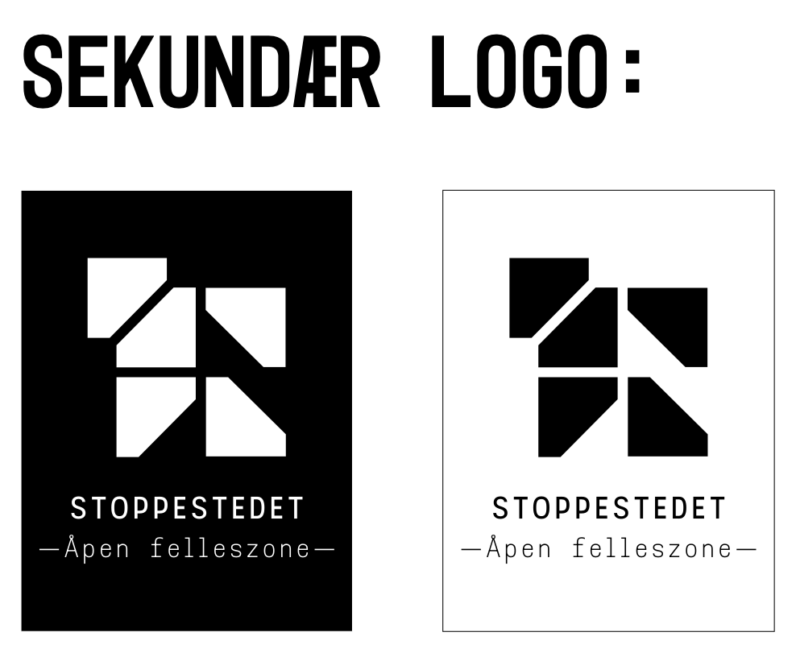
Primær logo
Logomerket er bygget opp av geometriske flater som sammen danner en form som kan assosieres med et knutepunkt. Formen visualiserer møte, orientering og fellesskap, og kan samtidig leses som abstraherte arkitektoniske elementer som rom, tak og strukturer. Den åpne formen understreker tilgjengelighet og inkluderende bruk. Primærlogoen består av logomerket alene og brukes der identiteten skal være tydelig og gjenkjennelig, som på forsider, skilt og større flater.
Sekundær logo
Sekundærlogoen kombinerer logomerket med tekst som forklarer tilbudet som en «åpen felleszone», og brukes i mer informasjonsrettede sammenhenger der det er behov for å tydeliggjøre konseptet og hvem tilbudet er for, for eksempel på vinduer ut mot gaten der forbipasserende kan få rask forståelse av stedet.
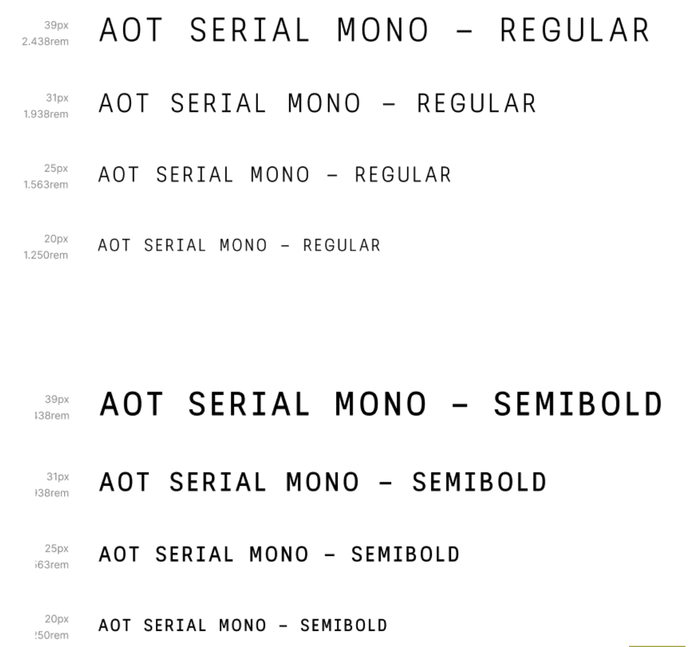
Typografi
AOT Serial Mono er valgt som hovedtypografi fordi den kombinerer et moderne uttrykk. Skrifttypen gir et presist og samtidsriktig preg med assosiasjoner til digitale grensesnitt, uten å bli for dekorativ. Flere vekter og variabel font gjør det enkelt å etablere tydelig informasjonshierarki på tvers av skilt, kart og flater.
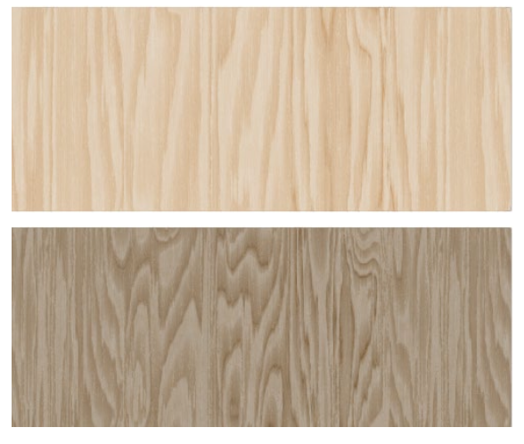
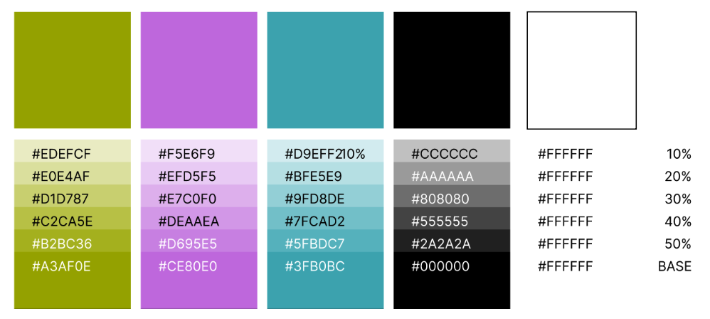
Treverk
Svartbrun filmbelagt kryssfiner er valgt som et sentralt materiale i prosjektet. Materialet er trebasert og belagt med filmbelagt papir som er termisk presset sammen med kryssfinerplaten, noe som gir en glatt, slitesterk og motstandsdyktig overflate. Det er vanntett, brannsikkert, enkelt å holde rent og har høy motstand mot vær, korrosjon og kjemikalier. Kryssfiner er valgt for å tilføre varme og et mer uformelt og tilgjengelig uttrykk enn tradisjonelle, institusjonelle materialer. Oppbygningen av krysslimte lag gir høy styrke og formstabilitet, og materialet brukes ofte i konstruksjoner, møbler og interiør. I prosjektet kombineres filmbelagt kryssfiner med synlig treverk, noe som skaper et rolig, imøtekommende uttrykk og en balansert veksling mellom det robuste og det varme.
Fargepaletten
Fargepaletten er utviklet i tett samspill med treverket og består av grønne, lilla og blå toner. Disse fargene er valgt for å understøtte verdier som trygghet, orientering og tilhørighet. De grønne tonene gir assosiasjoner til ro, vekst og stabilitet, mens blått bidrar med en følelse av struktur, oversikt og tillit. Lilla tilfører et mer urbant og identitetsskapende element, som gir rommene karakter uten å dominere. Samlet bidrar fargevalget til å forsterke materialenes uttrykk og bygge opp under prosjektets helhetlige identitet.
Identitetsform
Dette elementet er bygget opp av de samme geometriske flatene som logoen. Formen kan assosieres med et knutepunkt og gir en tydelig urban følelse, som understreker konseptet om orientering og tilhørighet. Den brukes i flater der uttrykket ellers oppleves visuelt tomt eller der det er behov for å tilføre mer farge enn sort og hvitt alene. Bruken er bevisst avdempet og skal støtte helheten uten å konkurrere med informasjon eller veifinning.
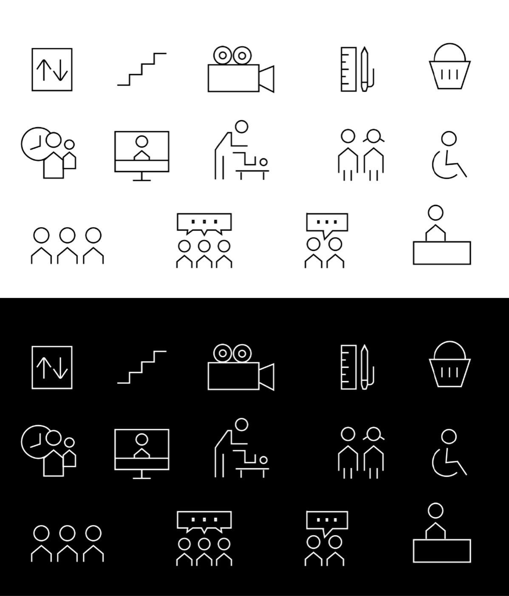
Ikonsett
Jeg har utviklet et sett med ikoner som bevisst benytter skarpe former. Dette kommer særlig til uttrykk i personfigurene, som har en husformet kropp. Dette er et visuelt grep som igjen understreker temaet tilhørighet og det å ha et sted å høre til.
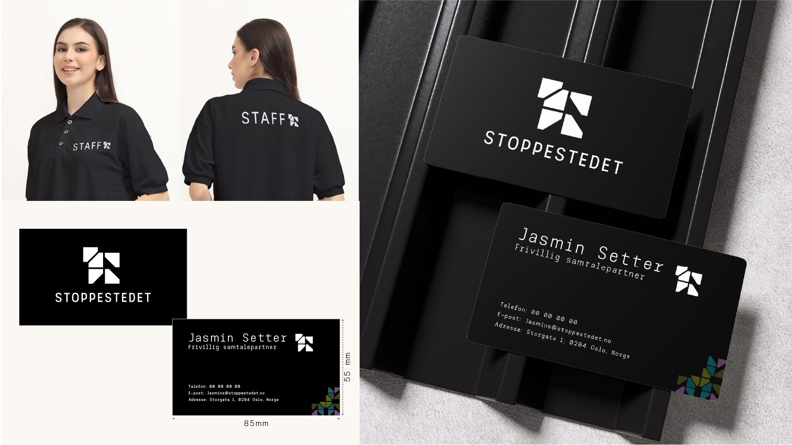
T-skjorte & Visittkort
Jobb-T-skjorte og visittkort designet for de frivillige på Stoppestedet. Designet følger den visuelle identiteten med Space Mono-typografi, den karakteristiske grønne fargen og den grafiske stilen som reflekterer stedets ungdomskultur og åpne atmosfære.
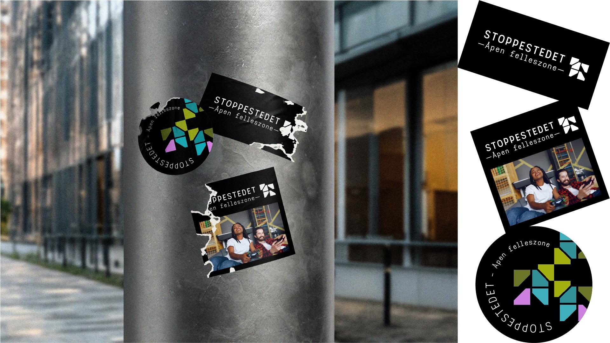
Stickers
Stickers designet for Stoppestedet i samme visuelle stil som resten av identiteten. Enkle, grafiske former og den karakteristiske fargepaletten gjør dem gjenkjennbare og lette å bruke på tvers av ulike flater.
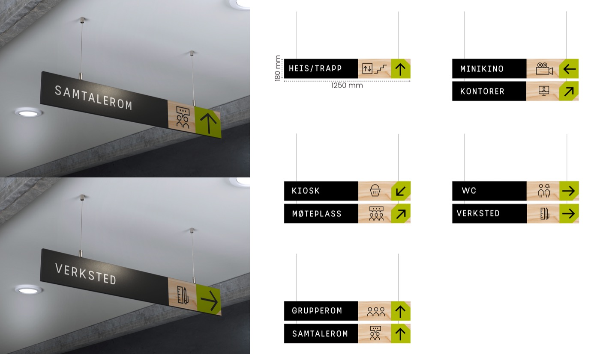
Skiltdesign
Disse skiltene fungerer som det primære orienteringsnivået i lokalet og er plassert i tak for å være synlige på avstand. Det er bygget opp av tre deler:
- Funksjonsnavn i mørk bakgrunn for høy kontrast og lesbarhet.
- Piktogram på treverket for rask visuell gjenkjenning og identitet.
- Grønn pilflate med skrå kant, hentet fra logoens formspråk.
Oversiktskart
Dette fiktive kartet over romplanen er strukturert over tre etasjer. 1. etasje fungerer som et inngangs- og møtenivå. Her ligger ventesone og sentrale fellesfunksjoner som møteplass og kiosk. 2. etasje rommer mer differensierte aktiviteter, som samtalerom, grupperom og verksted. Alt er samlet i soner slik at det oppstår en tydelig overgang mellom åpne og mer skjermede funksjoner. 3. etasje inneholder blant annet minikino og kontorer.
Fargekodene knytter funksjonene sammen på tvers av etasjene. Toalett, ventesone, kontorer og resepsjon er ikke tildelt egne identitetsfarger, fordi de regnes som grunnleggende orienteringspunkter i bygget.

Plakat
Dette er en mulig plakatløsning for arrangement som kan skje på Stoppestedet.
Mockups
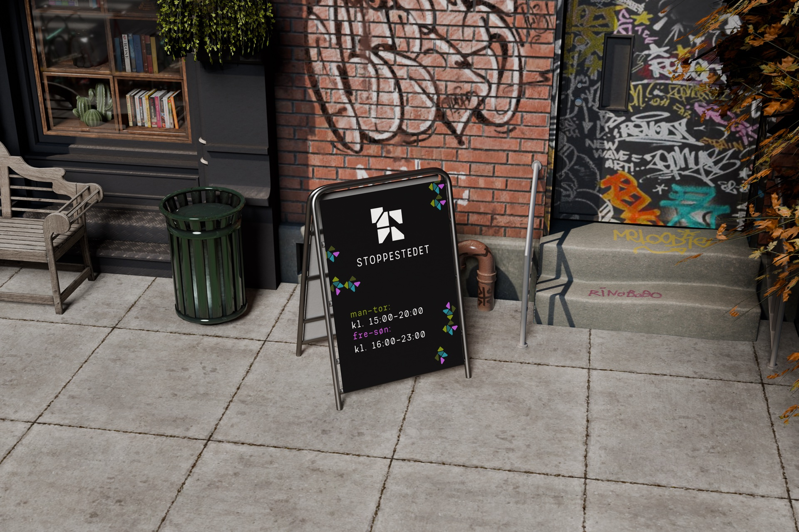
Skilt ute
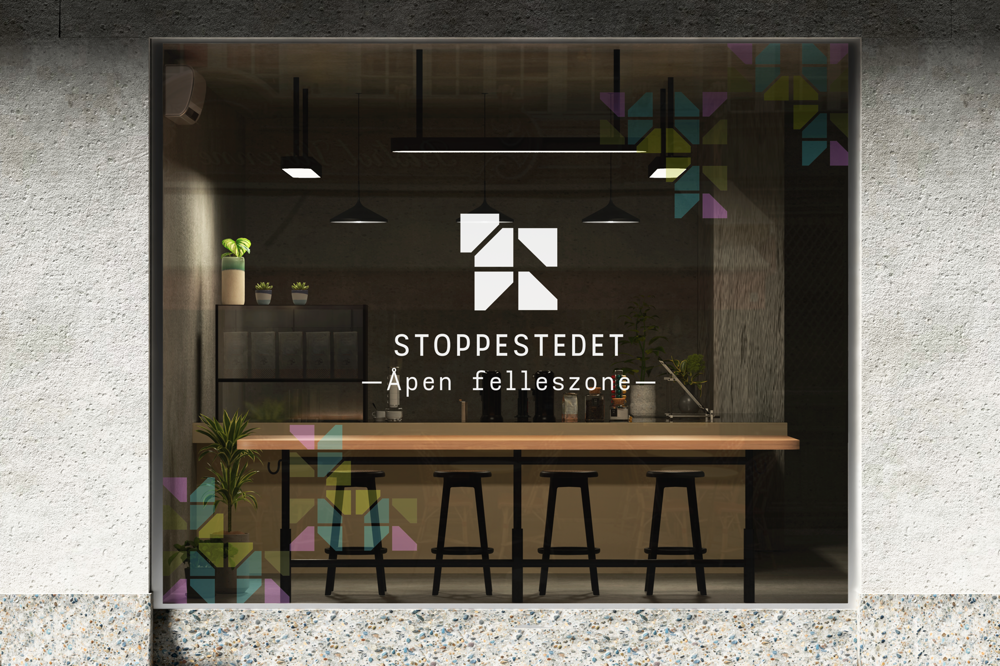
Utsiden av Stoppestedet
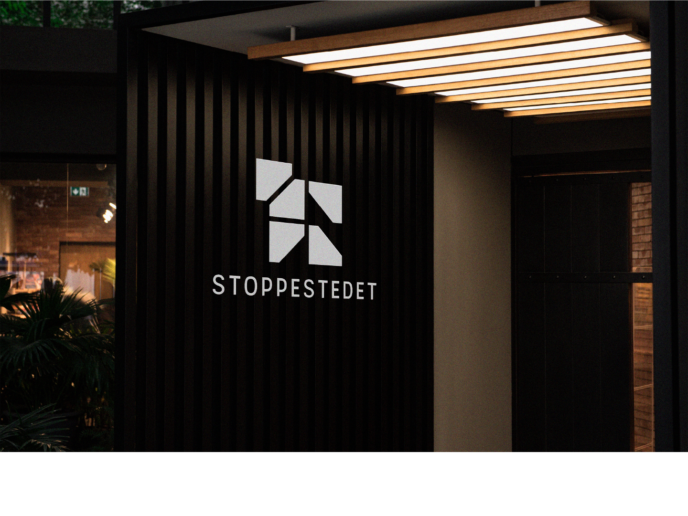
Innsiden av Stoppestedet
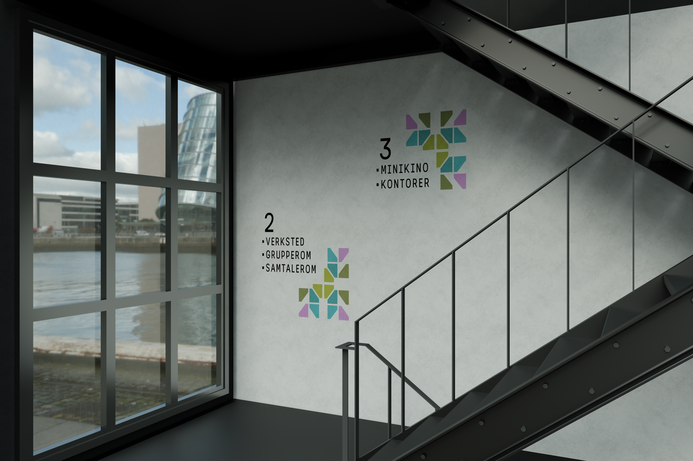
Veggdesign